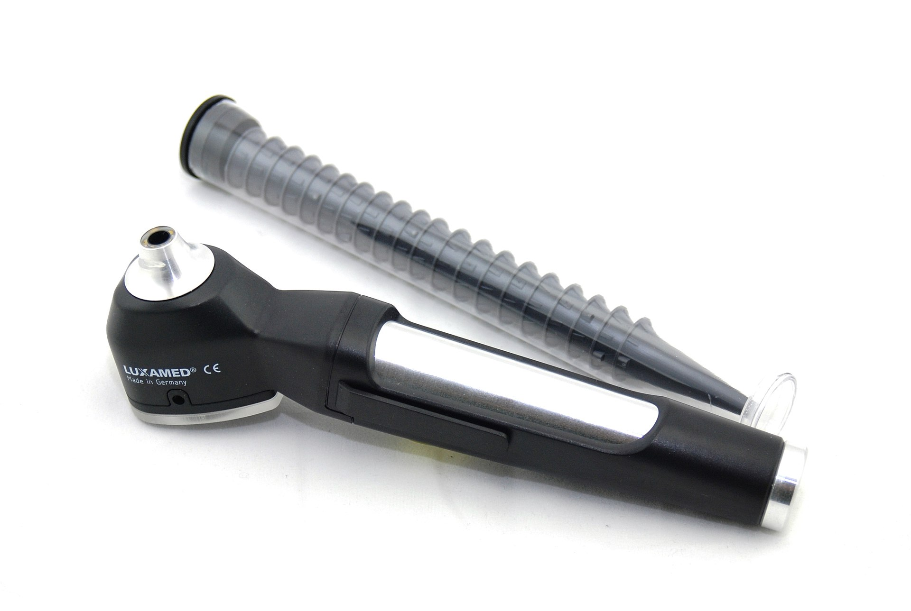
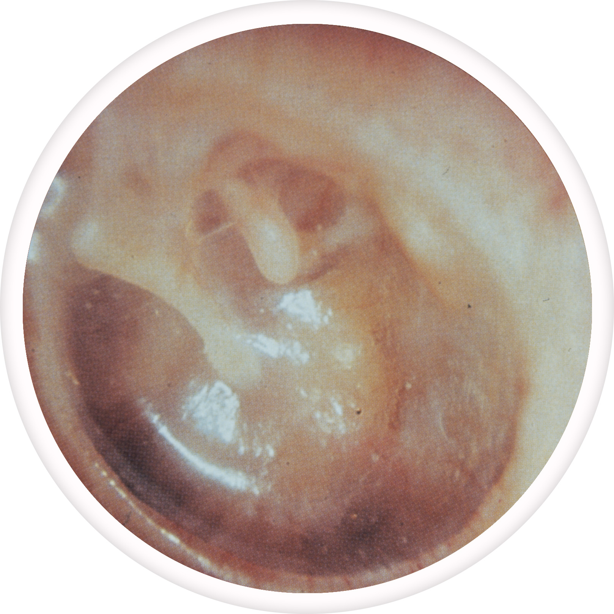
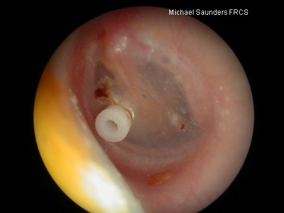
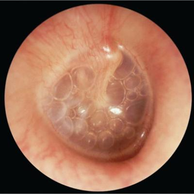
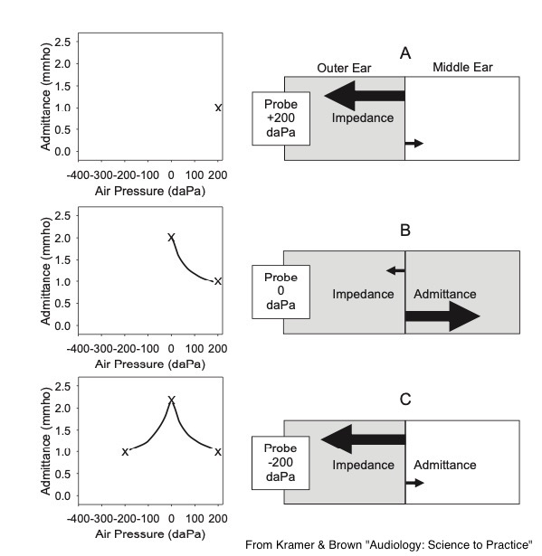
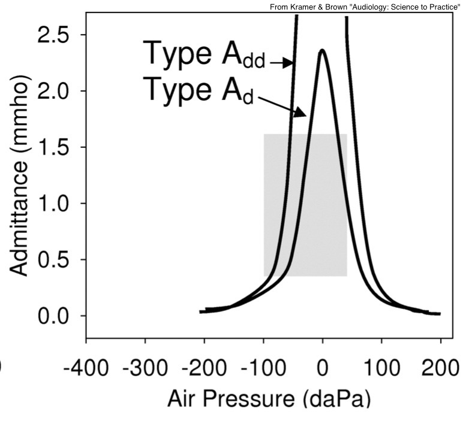
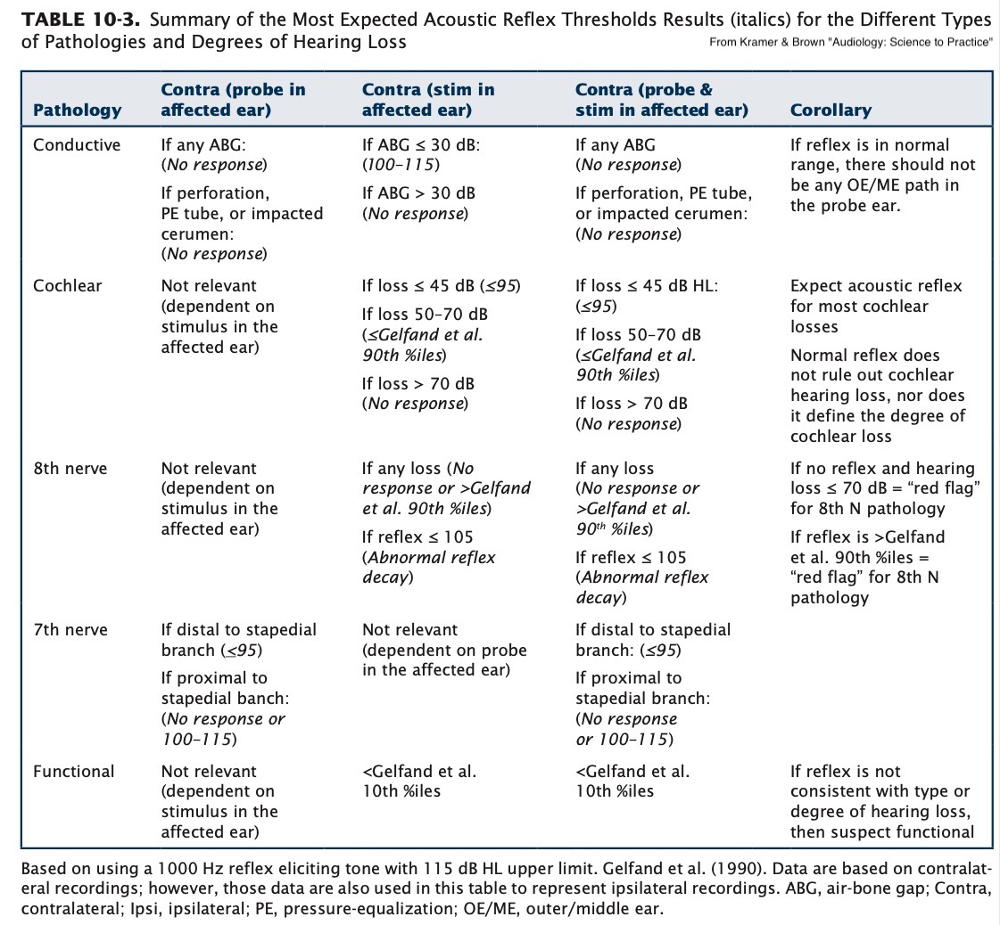

“How can we evaluate hearing?”
“How can we characterize different hearing conditions in a numerical way?”
“How can we help people who want to hear better to hear better?”
Pure-tone Audiometry
Speech Audiometry
Otoscopy
Tympanometry
Acoustic Reflex Measurement
Auditory Brain Stem Response
Measures the amplitude required to hear a “pure tone” at a variety of frequencies.
“Press the button when you hear a beep”
Can be done with or without masking
This is a subjective, behavioral test
We’ll focus on this in our next session!
Measures the amplitude required to understand speech!
“Repeat each word you say back to me”
Again can be done with or without masking
Also subjective and behavioral
Also in our next session!


(Go ahead and google that yourself, it’s not pretty)




“Is it taking in sound?”
“Is the tympanic membrane moving as expected?”
“Is the pressure inside the ear what we’d expect?”
This is an ‘objective’ test
Admittance is the opposite of impedance
“I’m going to play a 226Hz tone at 85dB into the ear, let’s see how much is pulled into the middle ear”
We can compare the amount of admittance to known normal values
We expect the middle ear to absorb energy best at atmospheric pressure
So, you ‘sweep’ the pressure while measuring admittance!






They tell us about middle ear and ossicular function
They tell us about pressure inside the ear
They tell us about TM health
They provide more information for diagnosing hearing trouble!
Otoscopy, Pure-tone Audiometry, Speech Audiometry, and Tympanography
… but sometimes you need more data!


“How much sound energy is being allowed to pass down the chain”
The acoustic reflex should change the admittance!
Play a series of escalating tones into one ear or the other
Then measure the level at which we see the AR happen!

We can measure the threshold which triggers it
… and we can measure same ear (ipsilateral) and opposite ear (contralateral) reflexes!

Children, Infants, Newborns
Potentially non-cooperative adult patients
… or the patient has troubles that aren’t well captured by other measures
We might want to look for evoked responses
We’ve talked about these already
“Play a sound into the cochlea, and listen for what comes back!”
They help measure the health of the cochlear amplifier
Chapter 11 of your book goes into depth
Sometimes, you suspect there’s a nerve problem
Or maybe you can’t get subjective, behavioral measurements
But you still want more detailed information than OAEs
Present auditory stimulus repeatedly
Look for evidence of neural activity by measuring scalp potentials
Use signal averaging to isolate the responses which are time locked to the stimulus


It can give us thresholds of perception
It can identify pathologies of the 8th nerve
It’s yet another window into hearing function!
These are covered in more depth in Chapter 11!
Audiological tests provide useful information for diagnosing pathologies
They can give direct information
They can give us subjective, behavioral information
They can give us objective information about the systems
They’re all awesome!